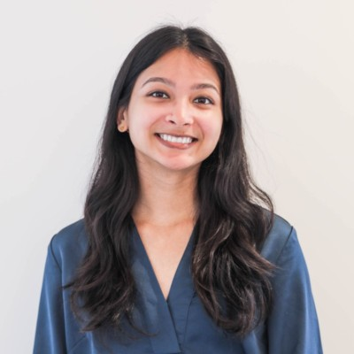
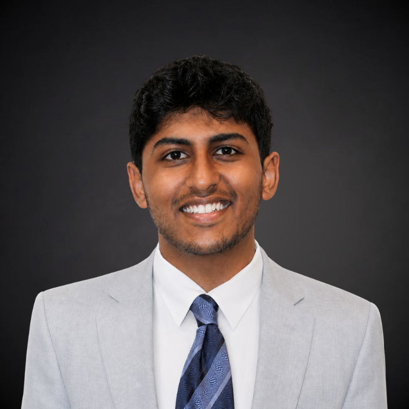
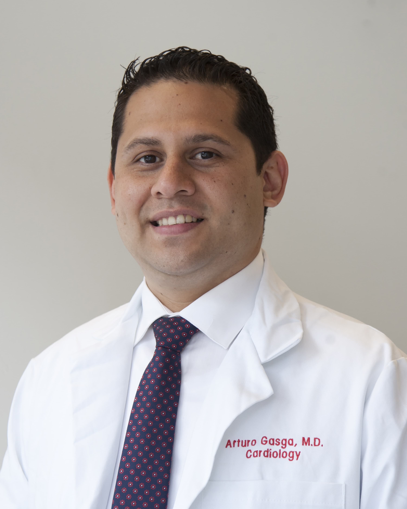
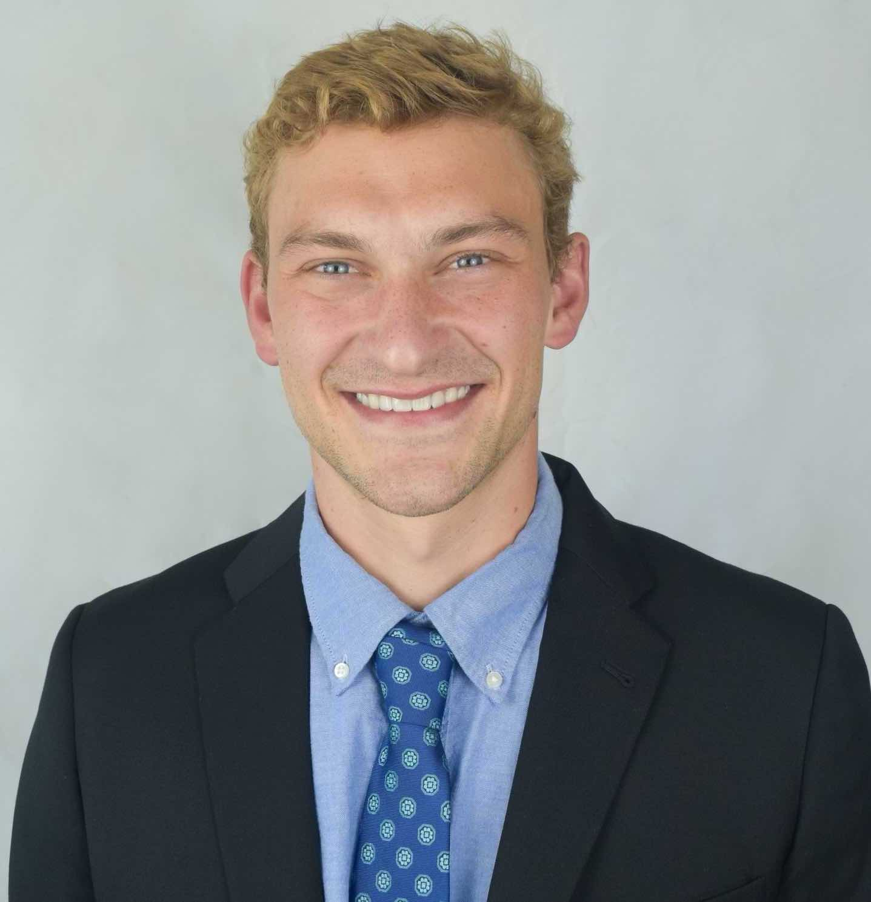

Team
Team members

Lucas Zier
M.S., M.D.
Team Lead, Associate Professor of Medicine at the University of California, San Francisco, Director of Cardiovascular Quality and Outcomes at Zuckerberg San Francisco General Hospital

Jean Feng
M.S., Ph.D.
Lead Data Scientist, Associate Professor at the University of California, San Francisco

James Marks
M.D., Ph.D.
Professor Emeritus at the University of California, San Francisco, Former Chief of Performance Excellence, Zuckerberg San Francisco General Hospital

Hemal Kanzaria
M.D., M.Sc.
Terry A. Patinkin, M.D., Endowed Professor of Health Equity and Professor of Emergency Medicine at the University of California, San Francisco, Chief of Performance Excellence, Zuckerberg San Francisco General Hospital

Christopher Peabody
M.D., M.P.H.
Associate Clinical Professor of Emergency Medicine at the University of California, San Francisco, Quality Improvement Director, Zuckerberg San Francisco General Hospital and Trauma Center

Robert Gallo
M.D.
Assistant Professor of Medicine at the University of California, San Francisco, Division of Hospital Medicine at Zuckerberg San Francisco General Hospital and Division of Clinical Informatics and Digital Transformation

Patrick Vossler
Ph.D.
Data Scientist

Jialin Ouyang
Ph.D.
Data Scientist

Nina Singh
M.D.
Resident
Anran (Anna) Huang
M.D.
Resident

Shreyas Kiran
Medical Student
Vicky Li
Clinical Informatics Specialist
Alumni
Avni Kothari
M.S.
Data Scientist

Arturo Gasga
M.D.
Clinical Fellow

Danny Bennett
M.D.
Resident
Nick Phelps
Medical Student
Michael Phipps
M.S.
Data Analyst